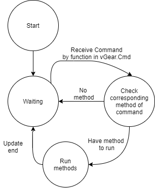
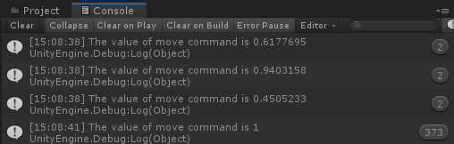
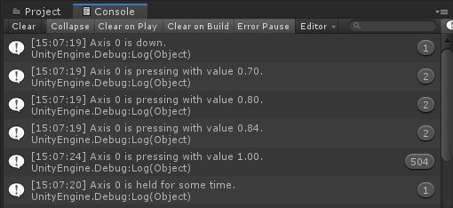

Getting Cross-platform Input
In this article
Objective
VotanicXR has built up interfaces for the input system, and divided the input into several levels. This chapter introduces the first two levels, Command level and Virtual Controller level. Command level
Cross-platform Input System
The Command Input System using vGear.Cmd class in vGear as command manager, to handle the Send and Receive of commands. The command can be sent by using api and inputting the button bound in the setting file.
The Virtual Controller level using vGear.Ctrl class in vGear, to receive the button input with respect to the index saved in setting file.
The setting file can be modified in Configurator.
Set up Tutorial Profile
Using Configurator
To modify the setting file, please go to Configurator.
Open Sample Scene
Go to Assets > Votanic > VotanicXR_Tutorial > Tutorial02 and open the scene Input System provided.
Add a gameObject named TutorialController and create a component named Tutorial02Controller for the code sample below.
Command Input System
Command Input System Overview
Command Input System is a simple communication system to handle the Send and Receive of Command. The reference class is vGear.Cmd.
Once a command is sent, the command handler will receive the command and can be checked by the API functions. When the command is checked, it will returns true and triggers the custom methods.

Define New Command
There are several ways to define a new command.
Create Command in Configurator
To create command in configurator, please go to Configurator.
Map Device Button to Command
To map device button to command, please go to Configurator.
Send Command from Interactable
vGear Interactable is a component provided by VotanicXR SDK to handle the gameObject Interaction.
When the component is interacted by user, the command saved in the component will be sent to the Command System.
Detail will be introduced at Interact with Virtual World and Detail of vGear Interactable.
Send and Receive Command
The basic functions of vGear.Cmd class are Send, Received and AllReceived.
Send sends a custom command to the command handler, the command sent can be received by Receive and AllReceived.
To check the parameter sent with the commands, you may use Value and Target.
Command Input Demo
The sample below shows the usage of Send and Receive. When the component is enabled, the command handler send a "Custom" command. The update function will check the command received by the command handler, once "Custom" command is received, will print the debug log.
void Start()
{
vGear.Cmd.Send("Custom");
}
private void CheckCustomCommand()
{
// CheckCustomCommand function in Update
if (vGear.Cmd.Received("Custom"))
{
Debug.Log("Custom command received!");
}
}

The sample below shows the usage of AllReceived and Value. The update function contains a foreach loop to get the command through AllReceived. For each command got from the handler, print out the float value of the command. If the command match "FunctionA", call the Function "FunctionA".
private void CheckAllCommand()
{
// CheckAllCommand function in Update
foreach (string command in vGear.Cmd.AllReceived())
{
Debug.Log("The value of " + command + " command is " + vGear.Cmd.Value(command));
switch (command)
{
case "FunctionA":
FunctionA();
break;
}
}
}

Virtual Controller Input System
Virtual Controller Input System Overview
Virtual Controller Input System is an input system to handle vCast controller. The reference class is vGear.Ctrl.
By default, this component will bind with Buttons and Axes of the connected devices automatically. The bound mapping can be configurated in the configurator, and the mapping can be customized for developer needs.
Configure Virtual Controller
Virtual Controller Input Demo
The sample below shows the input of button index 0 and axis index 0.
private void CheckVirtualControllerInput()
{
// CheckVirtualControllerInput function in Update
if (vGear.Ctrl.ButtonDown(0))
{
Debug.Log("Button 0 is down.");
}
if (vGear.Ctrl.ButtonHold(0))
{
Debug.Log("Button 0 is held for some time.");
}
if (vGear.Ctrl.ButtonPress(0))
{
Debug.Log("Button 0 is pressing.");
}
if (vGear.Ctrl.AxisDown(0))
{
Debug.Log("Axis 0 is down.");
}
if (vGear.Ctrl.AxisHold(0))
{
Debug.Log("Axis 0 is held for some time.");
}
if (vGear.Ctrl.AxisPress(0))
{
Debug.Log("Axis 0 is pressing with value " +
vGear.Ctrl.AxisValue(0).ToString("F2") + ".");
}
}
